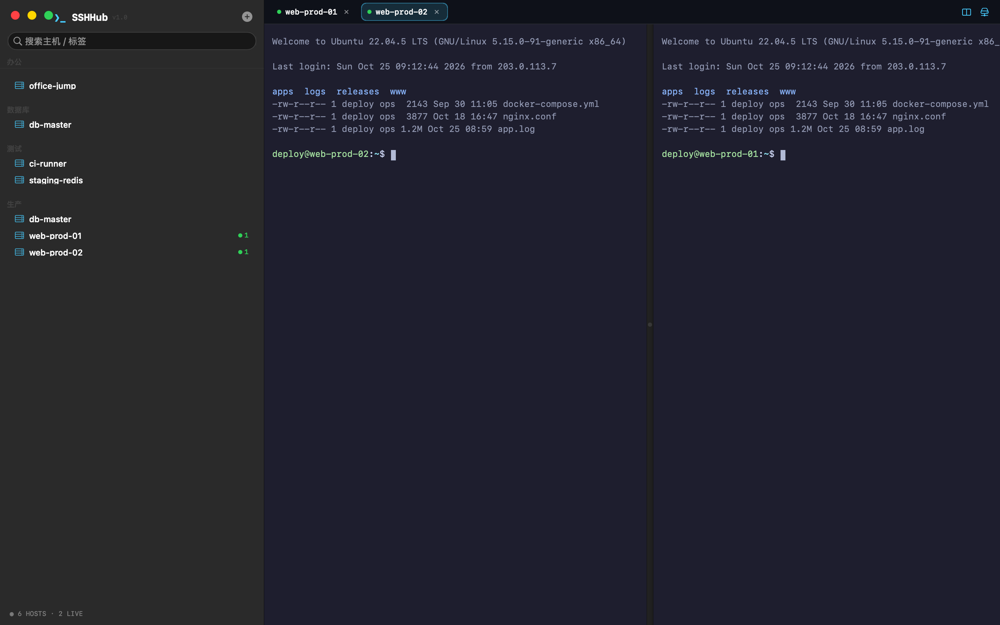
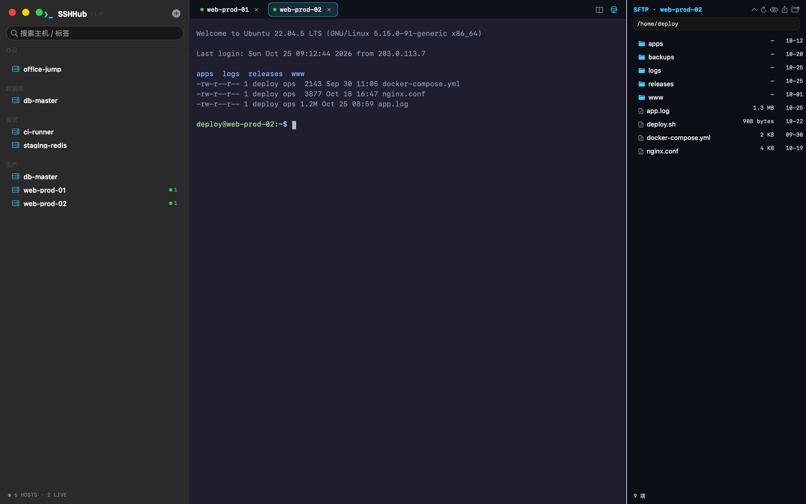
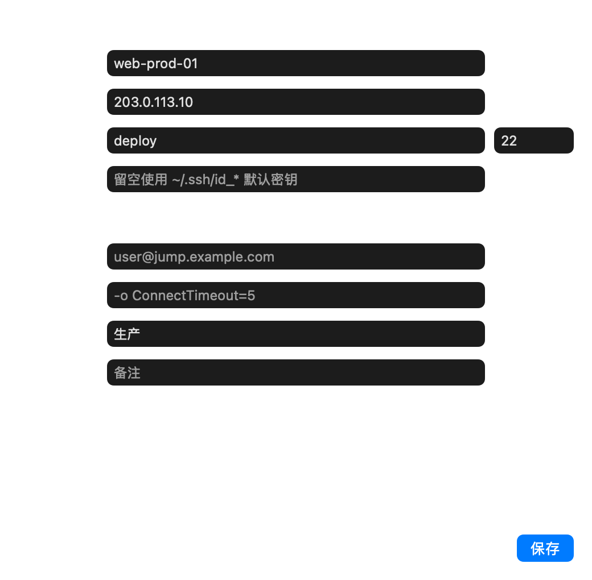
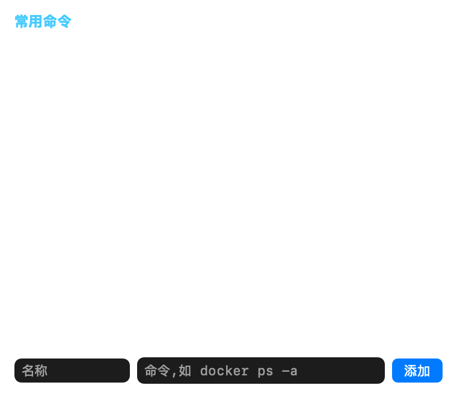

为 macOS 打造的原生 SSH 终端管理器。 主机管理、多标签、分屏工作区、内置 SFTP、端口转发 —— 一站式搞定,长得还好看。
SSH 引擎直接调用系统 /usr/bin/ssh —— 密钥、Agent、跳板机、known-hosts 与命令行行为完全一致
每个标签一条独立 ssh 进程,切换不断线、现场原样保留;彩色圆点标识主机,右键一键克隆会话。
最多 4 窗格并排盯日志、比对环境;切换标签保持布局,任意关闭不乱序,双屏党狂喜。
自实现 SFTP v3 协议、零第三方依赖:浏览、上传/下载(递归)、改名、新建目录,Finder 文件直接拖进来。
把当前会话组合与窗格顺序存成工作区,一键恢复整套布局 —— 日常那几台机器,打开就位。
-L / -R / -D(SOCKS)后台隧道,规则持久化、随应用自动恢复,失败原因直白可读。
模糊搜索主机 / 命令片段 / 动作,键盘流的最爱;⌘K 输入 user@host 直接连。
会话退出显示退出码,异常断开自动退避重连(最多 3 次);支持 mosh,高延迟链路打字即时回显。
导入私钥(自动 chmod 600)或一键生成 ED25519 密钥对;SFTP 密码可存入 macOS 钥匙串加密保存。
启动自动检查新版本一键升级;主机 / 片段 / 工作区 / 转发规则打包导出,新机器秒恢复。
开启后每个会话输出原样录制(含 ANSI 颜色),审计回溯有据可查,自动保留最近 60 份。
高频命令收藏起来,一键插入当前终端,或插入并立即执行 —— 运维口头禅不用再敲第二遍。
深色科技风起步,6 套配色、字体字号随便调;菜单栏常驻图标,任何主机一点就连。





免费版已覆盖日常运维;下面是规划中的 Pro 高级方向 —— 免费版永久免费,持续更新
Pro 为规划中的功能方向,不代表已上线;上线节奏以 Releases 公告为准。免费版承诺不变。
免费 · 无广告 · 不上传任何数据
系统要求:macOS 13 Ventura 及以上 · Apple Silicon。
应用内置自动更新:有新版本会自动提醒,⌘, 设置里也可手动检查。
市面上的 SSH 客户端要么笨重昂贵,要么功能残缺。SSHHub 想做的很简单:一台 Mac、一个免费的原生工具,把「连服务器、管文件、开隧道」这三件事做到顺手。
它用 Swift + AppKit 从零写成。SSH 直接交给系统 /usr/bin/ssh —— 密钥、跳板机、known-hosts 与命令行完全一致,不重复造轮子;SFTP 则是自己实现的 v3 协议,零第三方依赖。